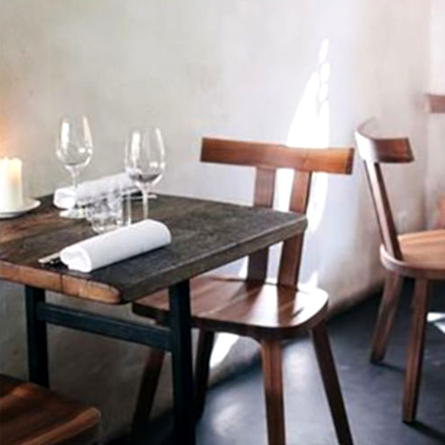
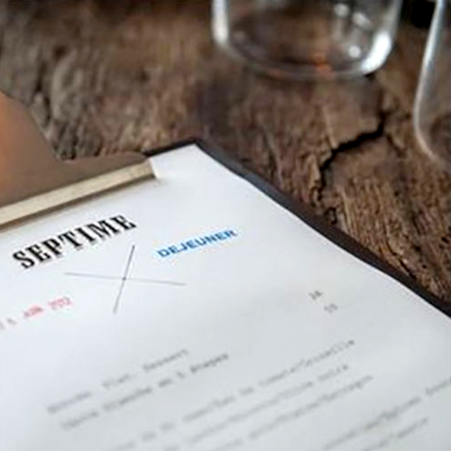
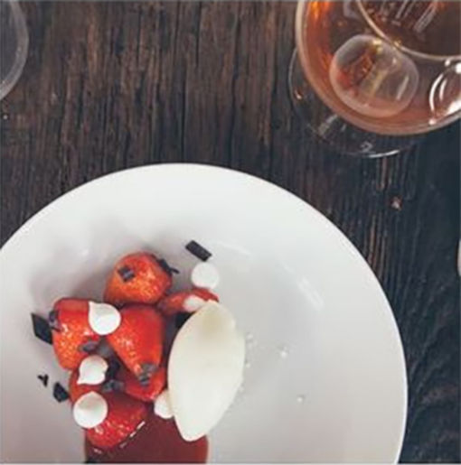
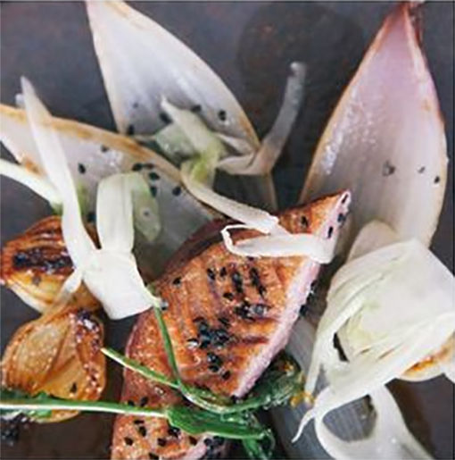

Ambiance brute, table en bois ancien, béton ciré au sol. La salle lumineuse est trés agréable, elle est ouverte sur la cuisine. Au fond de la salle, une jolie table ronde à vue sur une rue sur un petit jardin parisien. A l'entrée un joli sol en carreaux de céramique, quelques plumes de paon et de bien jolies bouteilles anciennes...
Le nombre des tables est limité, ce qui rend le restaurant trés appréciable, mais aussi trés prisé !
la note


Le service
Service toujours impeccable. L'ensemble de la table est servi rapidement, la corbeille de pain régulièrèment pleine, les serveurs expliquent le menu avec beaucoups d'attention et sont d'excellents conseils pour marier mets-vins.
On reconnaît l'ensemble de l'équipe à leurs tabliers bleu.
la note
Le dressage
Le dressage c'est un peu la marque de fabrique du chef, avec la cuisine biensûr. Ses plats sont de vrais petits tableaux de maître. Une belle recherche dans les formes et couleurs très agréable visuellement.
la note /strong>


Le goût
Enfin ! ; le goût. C'est le point le plus important, et tellement bien ajusté ici. Les papilles voltent et virevoltent au rythme des saveurs si justes, des cuissons si parfaitement maîtrisées.
Chaque plat, chaque association, rien n'est laissé au hasard, de l'élément principal à la toute petite feuille d'herbe délicatement posée sur le dessus du plat. Emerveillement des sens et frénésie de créativité sont au rendez-vous.
la note